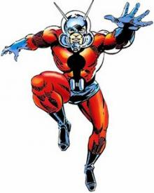

Доктор Генри «Хэнк» Пим был выдающимся учёным, который большую часть своего времени проводил в лаборатории. Однажды он встретил Марию Тровую (Maria Trovaya), на которой позже и женился. Вскоре влюбленные отправились в путешествие по родной стране Марии, во время которого жену Хэнка схватили революционеры и, несмотря на все его усилия, убили её. После этого Пим пережил свой первый психологический срыв.
Спустя некоторое время Хэнк обнаружил группу особых субатомных частиц. Используя их, Пим создал сыворотку и испытал её на себе, в результате чего уменьшился в размерах. В этот момент Хэнка поймали муравьи и затащили его в муравейник. Тем не менее, Пим сбежал и вернул себе нормальный рост. Тогда он решил, что сыворотка опасна, и уничтожил её. Но через некоторое время Хэнк передумал и создал сыворотку вновь, существенно улучшив ее. Частицы, которые помогали Генри уменьшаться, он назвал «Частицы Пима». Позже на их основе Хэнк создал газ, который действовал как сыворотка. Также Пим разработал кибернетический шлем, который позволял ему принимать и отправлять сигналы, с помощью которых общаются муравьи. Тогда Генри взял прозвище Человек-Муравей (Ant-Man) и стал бороться с преступностью. Поскольку у Пима не было транспорта, с помощью которого он мог бы быстро придти на помощь, Хэнк создал в стене катапульту, откуда начинал движение, заканчивая его тем, что приземлялся на кучу муравьёв, собранных по его приказу. Также Генри использовал насекомых в качестве осведомителей: когда кто-то нуждался в помощи, муравьи по всему Манхэттену передавали Пиму соответствующее сообщение.  С помощью своих союзников Человек-Муравей остановил множество незначительных преступлений. Это привлекло внимание некоторых злодеев, в числе которых были Протектор (Protector), Налётчик (Hijacker) и Голоса (Voice). Преступники пытались убить Хэнка, но потерпели неудачу. Также Пим был вынужден отбивать атаки таких злодеев, как Товарищ Х (Comrade X), Кулла (Kulla) Алый Жук (Scarlett Beetle), Повелителем Времени (Timemaster). Однако его главным врагом стал Элайа Старр по прозвищу Умник / Элайа Старр (Egghead). Преступник продавал секретные документы коммунистам и поэтому часто сталкивался с Человеком-Муравьём. Вскоре Старр понял, что Хэнк управляет муравьями и тогда тоже создал устройство, которое позволило ему общаться с насекомыми. Элайа сказал муравьям, что, если они хотят избавиться от рабства Генри, они должны принести Пима в особое место, в котором Умник предварительно установил свою ловушку. Однако насекомые рассказали Хэнку о ловушке, и тогда тот принял соответствующие меры, которые помогли ему обмануть Старра.
Спустя некоторое время Пим стал работать на правительство. Вскоре они попросили Генри с помощью его частиц создать формулу, которая бы обеспечила защиту от радиации. Именно в это время несколько советских агентов КГБ вторглись в лабораторию Хэнка и пытались уничтожить его. Тогда Пим одел недавно созданный защитный костюм и кибернетический шлем. Уменьшив себя, Генри выбежал на улицу к муравейнику и, получив контроль над муравьями, напал на сотрудников КГБ и освободил своих помощников. Позже Пим создал робота под именем Альтрон-1 (Ultron-1), который эволюционировал и стёр память генри о своём создании, а затем скрылся. Позже Альтрон объявился вновь и стал заклятым врагом Человека-Муравья.
Спустя некоторое время с Хэнком связался учёный Вернон Ван Дин (Vernon Van Dyne) и предложил участвовать в его научных экспериментах, но Пим отказался. С Верноном была его дочь Джанет Ван Дин (Janet Van Dyne), которая напомнила Генри о его давней возлюбленной Марии. После отказа Хэнка Ван Дин продолжил свои эксперименты, пытаясь связаться с представителями инопланетных рас. И однажды Вернону это удалось. Одно существо из измерения Космос проникло через телескоп ученого на Землю и до смерти напугало Ван Дина. Джанет не знала к кому обратиться и позвонила Хэнку. Благодаря муравьям Пим узнал о происшествии и в качестве Человека-Муравья поспешил на помощь. Джанет очень любила своего отца и решила отомстить за него. Генри сказал дочери Вернона позвонить в ФБР и предупредить их о пришельце, а после забрал её к себе в лабораторию. Там Человек-Муравей открыл свою личность Джанет и предложил ей присоединиться к нему в качестве партнёра. В лаборатории Хэнк передал ей Частицы Пима и сконструировал особые крылья и усики. Тогда Джанет взяла себе кодовое имя Оса и присоединилась к Генри. Новоиспеченная героиня поклялась отомстить за своего отца и восстановить справедливость. Вскоре Человек-Муравей и Оса выследили пришельца. Тогда Джанет, решив доказать Хэнку, что она уже давно не ребёнок, пыталась убить чудовище, но это решение чуть не стало для неё роковым. Впоследствии Оса и Человек-Муравей часто действовали вместе. Спустя некоторое время герои столкнулись с Умником, который взял Джанет в плен и увёз ее в Грецию, где Пиму пришлось сражаться с роботом циклопом. Также они отбили атаку пришельцев из Космоса, пытавшихся захватить Землю. Вскоре герои впервые столкнулись с преступником по имени Дикобраз (Porcupine). После этих событий Хэнк понял, что той катапульты, встроенной в стене, не хватало, чтобы добраться до пункта назначения в нужное время, поэтому он нашел себе летающего муравья по имени Корр (Korr), который перемещался гораздо быстрее.
Человек-муравей и Оса действовали до тех пор, пока не получили радиосигнал о том, что нужно сражаться с Халком (Hulk). Хэнк и Джанет были не единственными героями, которые услышали зов о помощи: Тор (Thor) и Железный Человек (Iron Man) тоже пришли на помощь горожанам. Герои следили за Халком до цирка, где пытались вернуть его в облик Баннера. Оса, Железный Человек и Человек-Муравей сражались с Халком до тех пор, пока Тор не понял, что всё это была уловка его брата Локи (Loki), и Халк невиновен. Тогда герои помогли зелёному гиганту победить бога обмана. После боя Генри понял, что, когда все они сражаются вместе, то их не победить. Все согласились, и решили работать в команде. Тогда Оса предложила название группе – Мстители (Avengers). Сражение на стороне Мстителей приносило героям как выгоду, так и неудобства. Одно из первых изменений в жизни Генри было то, что он стал Великаном (Giant-Man), когда выяснил, что может увеличиваться в размерах до 40 метров при помощи своих частиц. Теперь Хэнк боролся со злом, смотря свысока. Вскоре Пим превратил сыворотку в таблетки, выделяя их различными цветами, чтобы в нужный момент найти ту, которая уменьшит или увеличит его рост. Со временем Мстители стали набирать популярность благодаря сражениям с такими угрозами, как Космический Фантом (Space Phantom) или Нэмор (Namor). Также Человеку-Муравью пришлось иметь дело с фан-клубом Великана. Работая в одиночку, Человек-Муравей и Джанет потерпели поражение от рук Человека Вершины (Human Top), который позже будет известен под именем Вихрь. Вскоре Джанет заметила, что личность Великана влияет на поведение Генри. Всякий раз, когда Пим увеличивался, он вёл себя беззаботно и эгоистично, считая себя лучше всех. Также Хэнк стал буквально одержим мыслью о том, что Джанет – его девушка. Оса и Великан продолжали бороться с мелкими преступниками, такими как Чёрный Рыцарь (Black Knight) или диктатор из Санто-Рико по имени Эль Торо (El Toro). Между тем, отношения Генри с Мстителями становились все более напряжёнными особенно после того, как герои никак не отреагировали на угрозу Человека-Крота (Mole Man), про которую Пим узнал от муравьёв. Все отказали помочь Генри, даже Джанет, который нужно было срочно идти в парикмахерскую. Через некоторое время Оса была тяжело ранена в бою с Графом Нэферия (Count Nefaria), и тогда они с Хэнком решили уйти из Мстителей.
/giant2.jpg)
После того, как Оса и Великан ушли из команды, Генри решил продолжить бороться с суперзлодеями, такими как Аттума (Attuma), Мадам Макабр (Madam Macabre), Человек Вершина и Скрытный Человек (Hidden Man). Вскоре Скрытный Человек использовал устройство, которое не позволяло Хэнку уменьшаться. Позже Частицы Пима стали давать ужасные побочные эффекты. Отныне во время увеличения Генри испытывал боль, которая с каждым разом становилась сильнее. Спустя некоторое время Джанет была похищена Аттумой. Тогда Хэнк попросил помощи от Мстителей и надел новый костюм, создав новую личность по имени Голиаф (Goliath). После возвращения Джанет Генри остался в особняке Мстителей. Вскоре он подружился с новым ученым в лаборатории – Биллом Фостером (Bill Foster) (позже будет известен как Голиаф – прим. автора), который помог Хэнку стабилизировать частицы Пима. Благодаря этому Генри вновь научился безболезненно изменять свой размер. Также Билл помог Хэнку принять личность Чёрного Голиафа (Black Goliath). Позже Мстители столкнулись с новыми Мастерами Зла (Masters of Evil), преступной группировкой, руководимой Багровым Капюшоном (Crimson Hood). В эту группировку также входили Вихрь, Кло (Klaw), Плавильщик (Melter) и Радиоактивный Человек (Radioactive Man). Злодеи уже начали побеждать, однако в последний момент появился Чёрный Рыцарь и спас команду. Вскоре Багровый Капюшон раскрыл свою личность: им оказался робот, который называл себя Альтрон-5 (Ultron-5).
Позже Джанет подверглась нападению странного существа по имени Вижн (Vision). Во время боя Вижн отключился и был доставлен в особняк Мстителей, где его исследовал Хэнк. Когда он пришёл в сознание, то тут же напал на команду, сказав при этом, что его создателем является Альтрон-5, желавший уничтожить героев. С помощью Вижна Мстителям удалось победить Альтрона-5. Через некоторое время Генри вспомнил, что несколько месяцев назад работал над созданием искусственного интеллекта, но не мог вспомнить результат своей работы. Тогда Мстители отправились к дому Пима, чтобы все выяснить. Когда они добрались до места, то увидели, что дом Хэнка полностью запечатан. Зайдя внутрь, Генри вспомнил, что провел неудачный эксперимент с Человеком-Драконом (Dragon Man). После этого Пим использовал устройство в лаборатории, чтобы восстановить память. Тогда Генри вспомнил, что создал робота с искусственным интеллектом, которого он назвал Альтрон. После завершения работы детище Пима напало на своего создателя и загипнотизировало его, заставив забыть о своем существовании. Когда Генри всё вспомнил, он понял, что создал самого сильного врага Мстителей. После этого Хэнк перенёс второй нервный срыв.
Меня зовут Шмель!
- Хэнк Пим
Через несколько лет в лаборатории Пима случилась авария, в результате которой Генри отравился химическими парами. Отравление вызвало помутнение разума Генри, и тогда он создал ещё одну, четвёртую, личность – Шмеля (Yellowjacket). Надев черно-желтый костюм, показывавший окружающим его дерзость и уверенность, Шмель остановил несколько преступлений и проследил за тем, чтобы полицейские записали его прозвище. Вернувшись к Мстителям в этом обличье, Хэнк заявил, что убил Генри и потребовал членство в их рядах. Герои, не зная об истинной личности Шмеля, отказали наглецу. Тогда Пим похитил Джанет и заставил её выйти за него замуж. После поцелуя Джанет узнала, что Шмель – это и есть Пим. В это время из будущего появился Рик Джонс (Rick Jones) и вызвал Шмеля на войну Судьбы. Позже Преступный Цирк (Circus Of Crime) попытались похитить Джанет. Тогда Хэнк опять взял личность Голиафа и спас свою жену. Когда Мстители вернули Пиму рассудок, Генри и Джанет решили не разводиться и продолжать жить как муж и жена. Хэнк рассказал друзьям о тех химикатах, которые повлияли на его сознание. После этого Пим решил дальше использовать костюм и имя Шмеля, а Соколиный Глаз (Hawkeye) стал вторым Голиафом. Как и Человек-Муравей, Хэнк был искателем приключений и патрулировал улицы в облике Шмеля в отличие от Великана и Голиафа, которые приходили на помощь только в том случае, если надвигалась какая-то серьезная опасность. За время своего патрулирования Генри нажил себе новых врагов, известных как Дети Змеи (Sons Of The Serpent), считавших себя высшей расой «белых». Позже Шмель присоединился к Защитникам (Defenders). Вместе с Доктором Стрэнджэм (Doctor Strange), Валькирией (Valkyrie) и Ночным Ястребом (Nighthawk) Пим был схвачен Детьми Змеи, так как они считали героев предателями белой расы. Однако вскоре Защитников спасли Хеллсторм (Hellstorm) и Люк Кейдж (Luce Cage).
Вскоре Альтрон решил создать для себя жену. Тогда он сконструировал робота, но не смог оживить её. Будучи взбешенным, злодей вновь напал на своего создателя и на этот раз стёр из памяти Генри всю информацию о Мстителях. Альтрон заставил Хэнка думать, что он был пленником в особняке Мстителей, а само здание содержит в себе ужасное зло. После этого Генри снова перенёс нервный срыв и в качестве Человека-Муравья напал на друзей. Пим почти убил героев, однако Оса попыталась вернуть ему память. Тогда Альтрон схватил Джанет и, вместе с Пимом они вернулись на базу. Там злодей поместил Джанет в машину, которая должна передать её жизненные силы неодушевлённому роботу. Когда это произошло, Джанет в теле робота, известного как Джокаста (Jocasta), связалась с Мстителями и попросила о помощи. Поймав сигнал, герои прибыли на место и прервали процесс передачи сил. Джокаста так и оставалась безжизненной в течение нескольких месяцев. На протяжение какого-то времени Хэнк не мог вспомнить свое прошлое, но вскоре память вернулась к нему.
Со временем умственные проблемы Генри становились все серьезнее. Спустя некоторое время Пим вернулся к Мстителям в надежде на то, что найдёт там поддержку. Но оказалось наоборот: возвращение Хэнка только добавило напряжение в команде. В результате самооценка Генри резко упала, и это стало причиной его необдуманных поступков. Из-за постоянных нервных срывов брак Пима с Осой начал рушиться. Хэнк становился все более вспыльчивым. Он злился на Джанет за то, что она тратила деньги на всякую ерунду и постоянно опаздывала. Вскоре Генри признался Осе, что она ему больше не нужна. Однажды Пим ударил Джанет, а позже, во время битвы с Королевой Эльфов (Elfqueen / Linnea), Хэнк набросился на неё, так как она хотела отступить. После этого Генри жестоко избил Королеву своими био-жалами. Тогда Капитан Америка (Captain America) настоял на том, чтобы незаконные действия Пима рассмотрел военный суд. Слушания должны были начаться через три дня, а в это время Пим ушёл в лабораторию, чтобы создать робота, который бы напал на Мстителей. Генри планировал, что его детище одолеет героев и в этот момент он нажмет на кнопку выключения, тем самым уничтожив злодея. Этот поступок, по мнению Пима, должен был доказать, что он - ценный участник команды и его нельзя исключать из неё. Однако Оса раскусила Пима. Тогда Генри испытал робота на своей жене, тем самым пытаясь доказать, что его план безупречен. Но Джанет все еще пыталась остановить мужа. В ответ на это Хэнк ударил её. Во время слушаний Генри пытался обвинить Роджерса. Пим утверждал, что Королева Эльфов, якобы, околдовала Капитана Америку. В этот момент появилась Джанет и попросила Хэнка прекратить всё это. Люди были шокированы, когда увидели следы побоев на лице Осы. Тогда Хэнк попытался включить своего робота, но был остановлен. После этого Генри с позором покинул команду, а его брак с Джанет был расторгнут.
Запятнав себя позором и погрязнув в долгах, Хэнк бродил по улицам, надеясь на светлое будущее. Вскоре к Пиму подошёл его заклятый враг - Умник, который просил о помощи. Старр хотел, чтобы Генри помог ему наладить отношения с его племянницей Тришей Старр (Trish Starr), которой Элайа случайно нанёс сильные увечья. Умник разработал для Триш кибернетическую руку и попросил Пима установить её. Злодей предложил Генри пятьсот тысяч долларов и настоял на том, чтобы он взял эти деньги, поскольку у Хэнка были большие долги. Тогда Пим в роли Шмеля установил руку племяннице Умника. Однако позже оказалось, что Умник спроектировал руку таким образом, чтобы контролировать поведение девочки. После установки злодей заставил Пима работать на него. В противном случае Элайа грозился убить Триш. Умник приказал Хэнку выкрасть весь Адамантиум из правительственной поставки. Во время миссии Шмель включил тревогу, тем самым оповещая Мстителей об опасности. Прибыв на место, герои арестовали Генри и Триш. Используя руку, Умник стер память племянницы и внедрил ей новые воспоминания. Тогда Триш сказала Мстителям, что это Пим установил эту руку и заставил её пойти с ним на грабёж. Генри был взят под стражу, ожидая суда по делу об измене. В тюрьме Хэнка посетил Скотт Лэнг (Scott Lang) – второй Человек-Муравей и сообщил ему, что знает о причастности Умника. Скотт предложил свою помощь, однако Пим отказался. Хэнк хотел, чтобы суд сам во всем разобрался, а вмешательство человека из вне, по его мнению, могло только помешать. В тюрьме Генри узнал, что Тони Старк начал встречаться с Джанет. Этот факт еще больше расстроил Пима, поскольку не прошло еще и месяца с момента их развода. Через некоторое время Мастера Зла под командованием Умника пришли и похитили Генри из тюрьмы, специально оставив вместо ученого Шокера (Shoker), который должен был рассказать всем о том, что их всех нанял Хэнк. После этого Пим был окончательно дискредитирован в СМИ. Тогда Умник предложил Генри начать новую жизнь и вступить в ряды Мастеров Зла. Тем временем, Мстители, выяснив, что Шокер лжёт, выследили банду злодеев, чтобы спасти старого друга. Пока герои составляли план действий по спасению Пима, сам Генри победил Жука, Тигровую Акулу (Tiger Shark), Лунного Камня (Moonstone), Радиоактивного Человека и Умника в одиночку. Соколиный Глаз прибыл как раз в то время, когда Умник уже начал побеждать Хэнка. Тогда лучник вступил в бой с преступником, во время которого Старр был убит. После этого Мстители схватили Лунный Камень, и та рассказала им о плане Умника. Тогда было проведено еще одно судебное заседание, во время которого Пим был реабилитирован. После этого Хэнк сказал, что игра в супергероя была самой большой ошибкой в его жизни, и отказался вновь присоединяться к Мстителям. Он оставил личность Шмеля команде и уехал из Нью-Йорка вместе с Триш Старр. Позже Генри наладил свои отношения с Осой и еще не раз помогал Мстителям, когда им была нужна помощь.
После того как Хэнка оправдали, он вернулся, но на этот раз к Мстителям Западного Побережья (West Coast Avengers). Клинт Бартон встретил его с распростёртыми объятьями и даже предложил членство в команде, но Пим отказался. Он решил остаться в штабе и работать в качестве учёного, чтобы получше изучить Голиафа. Научная жизнь Хэнка была прервана неожиданным появлением Альтрона-12 (Ultron-12). С помощью Грима Рипера (Grim Reaper), Человека-Обезьяны (Man-Ape), Некры (Nekra) и Чёрного Когтя (Black Talon) робот захватил большую часть Мстителей Западного Побережья. Тогда Хэнк помог Чудо-Человеку (Wonder Man), объяснив, что преодолев свою неуверенность, тот спасёт команду. В это время Альтрон-12 сказал Пиму, что больше не ненавидит его и лишь хочет, чтобы тот возместил ему причиненный ущерб. Генри не поверил словам робота и решил исследовать свое детище, чтобы узнать о его тайных намерениях. Однако вскоре Альтрон-12 был убит Альтроном-11, который всё ещё ненавидел своего «отца» и хотел убить его.
Пока Хэнк был с Мстителями Западного Побережья, у него и Тигры / Грир Нельсон (Tigra / Greer Nelson) завязались романтические отношения. Вскоре над Грир нависло проклятье Бэлкатара (Balkatar), под действием которого Нельсон стала терять свою человечность. Тогда Генри поддержал Тигру. Влюбленные решили, что, когда проклятье будет снято, они вместе уедут куда-нибудь. С помощью духа Хеллсторма и Адской Кошки (Hellcat) Мстители Западного Побережья путешествовали по демоническим мирам и в конечном итоге столкнулись с Бэлкатаром. Одолев злодея, Нельсон превратилась в существо, являвшееся смесью тигра и человека. После этого Грир разлюбила Пима. Узнав об этом, Генри впал в отчаяние. Когда Мстители уехали из штаба на задание, Генри написал всем своим друзьям прощальные письма, а также извинения Джанет. После этого Хэнк поднял пистолет и приставил его к своему виску…
Однако в этот момент появился ангел-хранитель Генри - Огненная Птица (Firebird), также известная как и Эспирита (Espirita), которая спасла его. Она сказал ему, что Пим - настоящий герой. После этого Огненная Птица пообещала, что не оставит Генри и поможет ему наладить свою жизнь. За обедом Хэнк и Эспирита очень много разговаривали. Генри рассказал Огненной Птице о создании Частиц Пима, и тогда они начали рассуждать, для чего ещё можно было бы их использовать. Вместе герои построили летающее транспортное средство, которое могло стрелять пламенем, кислотой, пускать газ, уменьшаться и увеличиваться в размерах. Пим наградил эту машину ограниченным искусственным интеллектом и назвал ее Ровером (Rover). Позже Эспирита помогла Генри понять, что он может изменять не только свой рост, но и размер близлежащих предметов. Огненная Птица также убедила Хэнка в том, что он такой же ценный участник Мстителей, как и остальные. Вскоре Генри и Эспирита столкнулись с Лунным Рыцарем (Moon Night), и вместе они спасли Мстителей Западного Побережья, потерявшихся во времени. С тех пор Хэнк стал техническим и аналитическим мозгом команды, снабжая героев различными приспособлениями и устройствами. Спустя некоторое время власти США демонтировали Вижна. Тогда Генри восстановил его, выполняя инструкции правительства. После этого Пим помирился с Джанет. Во время выполнения миссий в составе команды Хэнк часто действовал в роли командира. Он участвовал в Операции Галактический Шторм и также в программировании второй невесты Альтрона – Алхемы (Alkhema), основанной на разуме Пересмешницы (Mockingbird).
Вскоре Генри вместе с остальными героями столкнулся с Натиском (Onslaught) и, казалось бы, погиб. Но на самом деле Хэнк был отправлен на Контр-Землю (Counter-Earth), созданную Франклином Ричардсом (Franklin Richards), где провел более года. Вернувшись, Пим возобновил свою деятельность супергероя в качестве Великана. Вскоре Генри выяснил, что он получил полный контроль над изменением собственного роста, но при этом лишился способности изменять размеры окружающих предметов, если не рассматривал их отдельно в своей лаборатории. Позже Пим стал вновь встречаться с Джанет. Спустя некоторое время Хэнк столкнулся с Ледяными Гигантами в Арктике. Герои сражались до тех пор, пока Моргана ли Фей (Morgan Le Fey) не околдовала его. Неспособный сопротивляться чарам волшебницы Генри стал служить злодейки. Позже Алая Ведьма (Scarlet Witch) победила злодейку, и тогда Пим освободился от заклинания. После сражения Великан, Оса, Железный Человек, Тор и Капитан Америка, как основатели Мстителей, начали обсуждать, кто из них останется в команде. Поскольку Генри недавно получил новую работу в исследовательском центре, он хотел покинуть команду. Позже Пим и Джанет пошли на праздник, устроенный жителями города в честь Мстителей. В этот день команда подверглась нападению со стороны Рипера и Легиона Мёртвых (Legion of the Unliving) - группы, состоявших из павших напарников героев. После сражения Хэнк стал работать научным советником Мстителей. Позже Алая Ведьма вызвала Генри, чтобы тот сделал костюм для Огненной Звезды, которая в тот момент не могла контролировать свои способности. Этот костюм помог Звезде контролировать силы в течение шести месяцев. Спустя некоторое время Пим, наряду с другими героями и злодеями, которые умели изменять свой размер, был пойман в плен существами из измерения Космос, желавшими захватить Землю. После этих событий Генри потерял способность уменьшаться и поэтому продолжал бороться с преступностью в роли Великана.
Позже загадочные Хранители Времени (Time Keepers), решив, что человечество стало потенциальной угрозой для вселенной, послали своего агента Иммортуса (Immortus), чтобы тот убил Рика Джонса. Чтобы противостоять надвигавшейся угрозе, была собрана новая команда Мстителей, в составе которой присутствовал оригинальный Пим в роли Великана и Шмель из прошлого, попавший в это время благодаря аномалиям, созданным посланником Хранителей Времени. Преследуя Иммортуса, герои очутились в Хронополисе (Chronopolis), где получили машину времени в форме сфинкса. После этого между Соколиным Глазом и Либрой (Libra) завязался спор, во время которого последний покинул Мстителей. Тогда управление машиной взял на себя Хэнк. В первую очередь Мстители начали ликвидировать временные аномалии, созданные Иммортусом. Чтобы ускорить процесс, команда разделилась на три группы: Капитан Америка и Великан отправились во время Убийства Ворона (Killraven), Соколиный Глаз, Певчая Птица (Songbird) и Шмель отправились на Дикий Запад , а Оса и Генисс-Велл (Genis-Vell) в 50-е годы 20 века. Тем не менее, Иммортус все это спланировал с самого начала, поэтому герои потерпели поражение. После воссоединения команды Певчая Птица сказала Пиму, что видела в будущем, как он и Джанет снова поженились. Затем Мстители отправились в Неопределённость (Limbo), где планировали найти Иммортуса. Там Шмель увидел своё будущее, в котором он стал неудачником, потерявшим жену и исключенным из Мстителей. Тогда он решил предать напарников, чтобы изменить свою судьбу. Шмель, использовав кибернетический шлем и нескольких жуков Неопределённости, отследил местонахождение Мстителей и передал их Иммортусу. Тогда злодей схватил героев. Спустя некоторое время Мстители очнулись в Империи Терран (Terran Empire), где правили Шмель, Иммортус и Хранители Времени. Злодеи решили, что, если они хотят создать свое царство, они должны уничтожить всё живое, кроме нескольких временных линий, которые приведут к созданию их мира. Узнав об этом, Шмель был потрясён. Не желая уничтожать миллиарды невинных существ, он вызвал Рика Джонса (с Силой Судьбы), Кэнга (Kang) и верховную разведку Крии. Тогда Хранители Времени бросились в бега, но Мстители схватили их с помощью жуков Неопределённости, управляемыми Шмелем. После боя Кэнг убил Хранителей, Рик Джонс уничтожил их оружие, а Капитан Америка разрушил кристалл. Тогда Шмель отправился в свое время, а все его воспоминания о Войне Судьбы были стерты. Вернувшись, Хэнк вновь взял личность Шмеля.
Вскоре Пиму предложили должность заместителя командира Мстителей, но он отказался и продолжил работать над созданием коммуникационных связей, основанных на ульях насекомых. Вместе с Джанет Генри стал запасным членом команды и не принимал непосредственного участия в их операциях. Между тем, за исследованиями Пима внимательно следил Альтрон. На этот раз злодей решил уничтожить всю человеческую расу. Вскоре Альтрон похитил Генри. Злодей рассказал Пиму о том, что во время его создания, Хэнк использовал свой мозг в качестве образца и на основе него создал программную систему робота. Альтрон собирался создать армию роботов на основе образцов мозга его «семьи», в состав которой входили Оса, Алая Ведьма, Чудо-Человек, Вижн, Рипер и Пим. В это время Алхема напала на Ваканды Дизайн Груп (Wakanda Desigh Group) в Лонг-Айленде, пытаясь заманить Мстителей в ловушку и не дать им испортить планы Альтрона. Сам злодей, тем временем, уничтожил страну Слорению (Slorenia) и объявил её родиной роботов. Затем Альтрон захватил героев из своей «семьи», чтобы выполнить свой план по созданию своей армии. Боясь, что война Альтрона перекинется на другие страны, Мстители нагрянули в Слорению. В то время как Альтрон пытал своих пленников, его приспешники сражались с Мстителями. В это время Вижн освободил героев, и тогда Генри начал избивать Альтрона Антарктическим Вибраниумом (Vibranium), тем самым уничтожив его. После этого Мстители покинули пустошь Слорении, в то время как Алхема, прибыв туда, стала вновь собирать злодея. После этого Пим в роли Голиафа вновь начал работать со своими друзьями.
Вскоре Хэнк вновь стал испытывать боль при изменении размера. Позже Генри помог Мстителям в борьбе с волшебником Куланом Гата (Kulan Gath), превративший южноамериканскую деревню в город, напоминавший родину Кулана. Также Хэнк помог противостоять Маггии (Maggia) и Графу Нэферия. Хотя Пим и избавился от психологического расстройства, тем не менее, подсознательно Шмель влиял на его поведение. Пим старался противостоять импульсивному Шмелю, пытаясь избавиться от него. В результате долгой борьбы две стороны личности Пима разделились, и тогда появился Шмель. Злодей помог Голиафу и Мстителям одолеть Кулана, после чего присоединился к Мстителям. Вскоре Шмель похитил Хэнка и, переодевшись в Голиафа, стал выдавать себя за Генри. Однако характер злодея отличался от характера Пима, и это вызвало подозрение у Мстителей. Вскоре Джанет разделила Мстителей на две команды: в одной была вся «ударная сила» команды, в том числе и Шмель, а в другой - ее «мозг». Так было проще наблюдать за потенциальными угрозами. Позже в один город попало большое количество радиации, под действием которой все жители стали превращаться в Халков. Тогда Мстители с помощью Баннера выкачали радиацию и, тем самым, спасли людей. Вскоре Шмель начал испытывать боль, которую посылал Генри, пытаясь установить контроль над своим злым двойником. Когда напряжения накопилось очень много, Шмель стал исчезать. Тогда злодей рассказал Джанет, где находится настоящий Пим. Узнав об этом, Мстители обратились к своему старому врагу Джонатану Тремонту (Jonathan Tremont), и тот помог Хэнку противостоять второй индивидуальности, после чего Шмель исчез. Освободившись, Генри взял себе личность Шмеля, поскольку решил, что только так он сможет узнать, влияет ли злодей на него или нет.
Спустя некоторое время Генри и Джанет опять возобновили свои отношения и часто брали отпуск, чтобы побыть вместе. Вскоре они полетели в Лас-Вегас, где Хэнк сделал Осе предложение. Однако Джанет отказалась, так как боялась, что из-за стресса Пим в любой момент может потерять над собой контроль. Позже Оса научилась увеличиваться в размерах, став похожей на Великана. Через некоторое время Джанет бросила Хэнка и стала встречаться с Соколиным Глазом. Вскоре Мстители подверглись ряду атак. В результате одной из них разъярённая Женщина-Халк (She-Hulk) ударила Джанет, и та впала в кому. Затем Алая Ведьма сошла с ума, и создала воинов Крии, которые напали на город. Пока Мстители отбивались от иллюзий Ванды, Пим находился рядом с Джанет у её больничной койки. Когда Оса пришла в сознание, она увидела, что Генри все время был рядом с ней, поскольку у него выросла борода. Тогда Джанет дала Хэнку еще один шанс и вновь начала встречаться с ним. Позже Мстители были вновь расформированы. Когда команда собиралась вновь, Хэнк и Джанет отказались вступить в нее. Генри стал работать в оксфордском университете, поскольку думал, что смена обстановки поможет улучшить его отношения с Осой.
Спустя некоторое время Хэнк получил задание от правительства построить «Большой Дом», маленькую тюрьму для суперзлодеев, которые при попадании в неё будут уменьшены при помощи частиц Пима. В эту тюрьму поместили Либера (Lieber), Куртцберг (Kurtzberg), Холливэя (Holliway) и Левшу (Southpaw). Вскоре Пима вынудили увеличить размеры Левшы, так как его арестовала Женщина-Халк, и было решено отдать злодея под стражу героине. Во время операции другие преступники тоже были увеличены и, воспользовались этим, они попытались бежать. На самом деле всё это было организовано Безумным Мыслителем (Mad Thinker). Тогда Женщина-Халк, Шмель и Невероятный Энди (Awesome Andy) объединились и поймали злодеев. Позже Хэнк заключил контракт с Щ.И.Т.ом (S.H.I.E.L.D.), по которому он должен был построить для них костюмы Человека-Муравья, которые бы выдавались специально обученным агентам. Пим выполнил заказ, и через некоторое время Щ.И.Т. подвергся атаке со стороны Росомахи (Wolverine), управляемым Гидрой (Hydra). В это время Эрик О’Грэйди (Eric O’Grady) взял один из костюмов, став новым Человеком-Муравьем.
/giant10.jpg)
Во время Гражданской Войны (Civil War) Генри зарегистрировался и стал сторонником Железного Человека. Хэнк помог создать клона Тора по имени Клор (Clor), который убил Билла Фостера, известного как Голиаф. Также Пим работал со Щ.И.Т.ом, тренируя молодых героев. К концу Гражданской Войны Пима заменил Халклинг (Hulkling). Спустя некоторое время журнал Тайм (Time) назвал Генри Человеком Года за технологические достижения, введённые в ходе событий Гражданской Войны, и вклад в новую супергеройскую структуру. Вскоре Хэнк стал тренером в Лагере Хэммонд (Camp Hammond), являвшимся частью программы Тони Старка под названием Инициатива (Initiative). Позже Пим был замечен в злоупотреблении таблеток.
Спустя некоторое время группа героев вместе с Пимом напала на авианосец Гидры. Во время сражения Хэнк увеличился, заставив авианосец упасть и взорваться. Чтобы пережить взрыв, Генри уменьшился до размера атома. За это Пим получил благодарность лично от президента. После этого Хэнк и Джанет переехали в Канаду. Там Пим встретил девочку, интересовавшуюся супергероями. Во время разговора она неожиданно превратилась в Скрулла (Scrull) и якобы убила Генри. Выйдя из комнаты, девочка натолкнулась на Осу. Джанет стала расспрашивать ее о том, что случилось. Но злодейка не обратила на нее внимания и ушла. Выйдя из дома, Скрулл, чьё имя было Крити Нол (Criti Noll), сообщила своему командованию, что миссия выполнена и превратилась в Пима.
После поражения Скруллов Пим и остальные супергерои, похищенные во время вторжения, были освобождены. Тогда Хэнку сказали, что Джанет погибла во время нападения Скруллов. Узнав об этом, Генри заперся в своей лаборатории, чтобы изменить Частицы Пима, сделав их более безопасными. Позже Пим в память о Джанет взял себе новую личность – личность Осы, и возглавил Могучих Мстителей. Вскоре команда столкнулась со Старшим Богом Чтоном (Chthon) и победила его. После сражения часть героев ушла из группы, но оставшаяся часть пообещала идти за Пимом до конца. Со временем отношения между Хэнком и Старком испортились, поскольку Генри обвинял Тони во многих существующих проблемах. Позже Норман Осборн (Norman Osborn), обнаружив лабораторию Пима, послал силы М.О.Л.О.Т.а (H.A.M.M.E.R.) и переместил ее в другое измерение. Чтобы восстановить труд всей своей жизни, Хэнку был нужен «Мерный Индуктор Волны», устройство, которое создал Билл Фостер незадолго до своей смерти. Этот аппарат забрал Рид Ричардс (Reed Richards), поскольку не доверял такую сложную технологию Пиму. Когда Генри пришёл к Риду, тот отказался отдать ему это устройство. Тогда Пим вместе с Мстителями напал на Здание Бакстер (Baxter Building). Добравшись до устройства, Хэнк столкнулся с Ричардсом. Во время сражения герои случайно активировали устройство и телепортировались в другое измерение. Два гения путешествовали по разным мирам и благодаря совместным усилиям вернулись домой. После этого Рид разрешил Пиму забрать устройство.
С помощью аппарата Хэнк вернул свою лабораторию и создал Бесконечный Особняк Мстителей (Infinity Avengers Mansion). Спустя некоторое время Генри и Ричардс выдвинули теорию о существовании Сверхпространства (Overspace) – вселенной, существующей выше всех остальных миров и находящейся за пределами времени и пространства. Прибыв туда, Пим и Рид встретились с Вечностью (Eternity). Во время разговора Богиня назвала Хэнка своим чемпионом и дала ему звание Верховный Учёный Земли (аналог Верховному Магу Земли). Однако Хэнк не поверил словам Вечности, сказав, что на Земле есть и другие гении, такие как Рид Ричардс или Тони Старк. Но Вечность продолжала настаивать на своих словах. Она сказала, что Пим как волшебник, делает невозможное возможным. Эти слова вселили в Хэнка уверенность, и тогда он решил продолжать командовать Мстителями. Позже Пим вместе со своей командой объединился с Фантастической Четвёркой, чтобы спасти Стива Роджерса.
Спустя некоторое время Могучие Мстители победили Неназываемого (Unspoken). Вскоре героям пришлось объединиться с Мстителями Нормана Особорна. После этого напарники Пима были заменены служащими агентами Г.Р.А.М.П.ы (G.R.A.M.P.A.). Позже Осборн попросил Хэнка помочь ему в осаде Асгарда (Asgard), но Генри отказался из-за возвращения Альтрона. Затем Пима похитила Красная Женщина-Халк (Red She-Hulk) по заданию группировки, известной как Интеллигенция (Intelligencia), собиравшей лучшие умы планеты. Пока Генри находился в плену, его Могучие Мстители участвовали в Осаде (Siege). Через некоторое время Брюс Баннер спас Хэнка, и тогда он вернулся в особняк, где его уже ждал Альтрон со своими роботами. Тогда Генри вступил в бой с прислужниками злодея. Бой длился до тех пор, пока Джокаста (Jocasta) не сказала Альтрону, что она согласна выйти за него замуж, если он отпустит Пима. Злодей согласился. Вскоре Генри присутствовал на свадьбе Альтрона и Джокасты. После церемонии Альтрон спросил у Хэнка, почему он должен оставить его в живых. Пим ответил, что во время свадьбы он отправил сигналы о помощи Мстителям из разных измерений, и теперь они уже здесь. В этот момент двери особняка открылись и на пороге появились герои из других вселенных. Увидев их, Альтрон схватил Джокасту и бросился бежать. После ухода злодея Пим отключил голограмму героев, сказав при этом, что это самый лучший блеф в его жизни. Затем Генри попал в Асгард через одну из дверей особняка, где помог Тору и его Могучим Мстителям спасти город.
После поражения Осборна Пим создал Академию Мстителей. Хэнк решил, что там он будет тренировать молодых супергероев, чтобы они не стали на преступный путь. В академию Генри вошли Ртуть (Quicksilver), Тигра, Правосудие (Justice) и Спидбол (Spedball), а Железный Человек, Стивен Роджерс и другие Мстители стали преподавателями этого учебного заведения. Вскоре Хэнк понял, что Джанет уже не вернуть и нужно отпустить ее. Тогда Генри бросил личность Осы и вновь стал Великаном, твердо решив, что больше никогда не будет менять свое прозвище. Спустя некоторое время Генри столкнулся с Поглотителем (Absorbing Man) и после непродолжительного сражения одолел злодея. Позже Хэнка посетил Эрик О’Грейди, который сказал Пиму, что одно из его изобретений было украдено. Но Генри отказался помочь Эрику, поскольку в тот момент был занят решением задачи с Ридом Ричардсом. Спустя некоторое время О'Грейди попал в ловушку к Лунатику (SleepWalker). Используя разум Эрика, злодей получил доступ к Особняку Мстителей. Проникнув на базу героев, Лунатик украл одно из изобретений Хэнка и передал его АИМ (AIM). При помощи этого устройства злодеи намеревались уничтожить душу Билла Фостера. Тогда Генри объединился с Эриком, чтобы помешать им.
Пим - ученый-теоретик. Он крайне образованный и интеллигентный человек. Генри может часми находится в своей лаборатории, проводя свои опыты и не любит участвовать в боевых операциях. Именно поэтому Хэнк зачастую входил в состав Мстителей в качестве консультанта и достаточно редко принимал непосредственное участие в миссиях команды. Не удивительно, что именно Пим возглавил Академию Мстителей, обучая молодых героев и делясь с ними своим опытом. На характер Пима также влияют его многочисленные нервные срывы, тянущие за собой частую смену его личностей.
Изменение размера: Главная способность Генри заключается в том, что он способен изменять собственный рост. Вначале Хэнк делал это при помощи различных газов и таблеток, содержащих Частицы Пима, но позже его организм научился сам их вырабатывать.
Поскольку тело Хэнка со временем научилось само вырабатывать Частицы Пима, то можно утверждать, что он способен моментально менять свой рост в диапазоне от 1,7 см до 3 км. Раньше Генри также мог изменять размеры предметов, находящихся рядом. Однако со временем он потерял эту способность.
Гениальный ученый: Генри - блестящий биохимик и исследователь. Хэнк не любит работать над практическими проектами, но вместо этого сосредотачивается на областях, где нужно задействовать воображение. У него большой опыт в области робототехники, программирования, кибернетики, субатомной физики и энтомологии (раздел зоологии, изучающий насекомых – прим. автора). Высокий IQ Пима делает его одним из девяти самых умных людей планеты. Он способен конкурировать с такими блестящими умами, как Рид Ричардс и Тони Старк. Вечность как-то дала Хэнку звание Верховный Ученый Земли.
Мастер рукопашного боя: Генри – эксперт в области рукопашного боя. Он изучал дзюдо и обучался у самого Стива Роджерса. В основном Пим использует стиль боя, зависящий от его размера. Если Генри находится в уменьшенном состоянии, он ищет слабые места противника и атакует быстро, так что противник даже не успевает опомниться. В роли Великана и Голиафа Хэнк берет силой, пытаясь задавить их своим весом.
Психическое расстройство: Пим страдает постоянными нервными срывами. Сейчас это, кажется, уже в прошлом.
Генри обладает обыкновенной силой, ростом и телосложением для человека своего возраста, регулярно занимающегося интенсивными спортивными тренировками. Сила Хэнка зависит от его роста. Когда Пим уменьшается, то его сила остаётся прежней. Когда же наоборот увеличивается, то его сила варьируется в зависимости от роста. На пике своих способностей Хэнк может поднять предмет, весящий более 500 тонн.
Шлем: Шлем Человека-Муравья позволяет Пиму общаться с насекомыми на расстоянии 1,6 км (1 миля). Это устройство содержит определенный запас кислорода и оснащено специальным радиопередатчиком, при помощи которого Хэнк способен общаться с людьми даже тогда, когда он уменьшается в размере. Также шлем способен стрелять зарядами малой мощности.
Гидравлические ботинки: Позже Генри изобрел особые гидравлические ботинки, благодаря которым он может прыгать с больших высот и спокойно приземляться на землю.
Веревка: В роли Человека-Муравья Хэнк носит с собой крепкую верёвку нейлона, при помощи которой он ловил преступников и даже перемещался на небольшие расстояния.
Шлем: Будучи Великаном и Голиафом, Пим носит особый Шлем, который помогает ему увеличивать предметы или людей вокруг себя.
Шлем: Шлем Шмеля идентичен шлему Человека-Муравья и спрятан под его черным капюшоном.
Перчатки: В роли Шмеля Пим носит особые перчатки, называемые «Жалами». Эти перчатки испускают электричество и используются Хэнком в качестве оружия.
Крылья: В костюм Шмеля встроены особые крылья, при помощи которых Генри может летать, когда находиться в уменьшенном состоянии.
Очки: Очки Осы могут сканировать, собирать и хранить неизвестное количество информации. По сути дела, это устройство является очень мощным миниатюрным компьютером. При помощи очков Хэнк также может отдавать дистанционные команды другим своим устройствам, таким как Шлем Человека-Муравья.
Крылья: В костюм Осы встроены особые крылья, при помощи которых Генри может летать, когда находиться в уменьшенном состоянии.
За всю свою супергеройскую карьеру Пим сменил множество устройств. Однако у него были и некоторые изобретения, которыми Генри пользовался всегда, независимо от того, в личности кого он находился.
Костюм: Костюм Хэнка состоит из нестабильных молекул, которые позволяют ему растягиваться и уменьшаться. До сих пор неясно, дал ли Пиму эти молекулы Рид Ричардс или же Генри сам изобрёл их. Генри постоянно совершенствует свой костюм и перекрашивает его, когда меняет свою личность.
Робот с инструментами: В начале своей карьеры Генри использовал специальные ремни на костюме, в которых хранил необходимые вещи, предварительно обработанные Частицами Пима в его лаборатории. Но позже он изобрел особого Робота с инструментами (Toolbot). Этот робот является высокотехнологичным и многоцелевым устройством. Он хранит необходимые Хэнку вещи, самостоятельно определяет, какие вещи нужны ему хозяину в данный момент, и выдает их.
Идентификационная карта Мстителя.
Будучи Человеком-Муравьем Пим перемещается на летающем муравье по имени Корр. В роли Шмеля и Осы Хэнк летает на собственных крыльях. Будучи Великаном и Голиафом Генри перемещается на собственных ногах. В нормальном состоянии Пим путешествует на квинджете Мстителей.
Частицы Пима: Пим открыл особые частицы, состав которых неизвестен, и на основе них создал две сыворотки. Одна из них уменьшала, другая увеличивала размер принявшего. Позже сыворотки были превращены в газ и помещены в канистры. Ещё через некоторое время Пим поместил частицы в таблетки. Самым лучшим вариантом оказалась сыворотка, так как с её помощью Пим и Джанет могли изменить размер по своему желанию. Также Пим ввел имплантацию синтетических стволовых клеток в организме человека, чтобы обеспечивать рост отдельным органам, таким как крылья.
Кроме достижений с частицами Пима Генри создал:
Хэнк Пим и его научные разработки играют важную роль в жизни многих других супергероев и злодеев в том числе:
Во время конфронтации Генри в лагере Хэммонд с новичком по кличке Травма (Trauma), чьи способности заключались в том, чтобы вызывать худшие страхи у своего противника, было выявлено, что Хэнк больше всего боится того, что его не будут уважать после того, как он ударил Джанет.
Во время сражения с Поглотителем, Генри первый и последний раз увеличился до таких размеров, что попал за пределы нашей реальности в реальность абстрактных существ, где на их фоне казался лилипутом.
Наверх